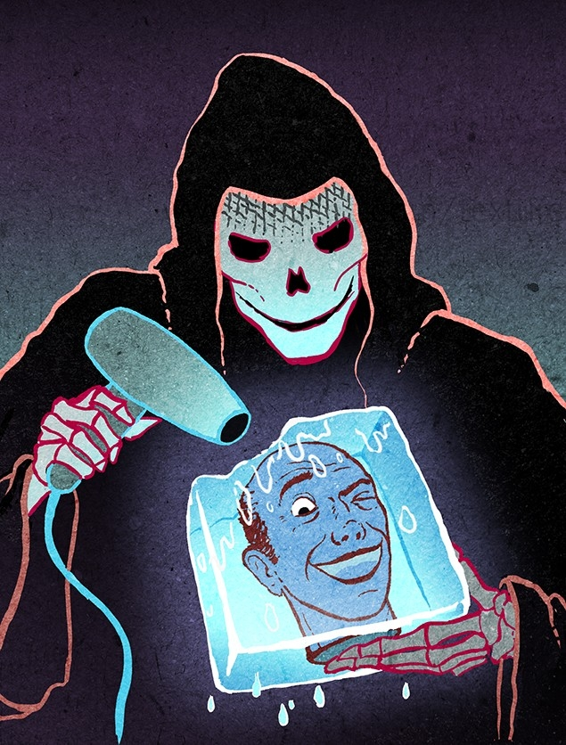

Are you fed up with the human condition and tired of ear hair? Do you wonder why your deserving ego should dissolve into the great Nothing that is the great All?
This manual is for you. It outlines the main steps to keep alive the wild hope of eternal life. Against all odds, nature, and everything else!

However, eternal life has become a business that requires you to ask yourself a crucial question: how much to invest?
- With 1 euro…
- Between 1 and 100 euros
- Between 100 and 1,000 euros
- Between 1,000 and 10,000 euros
- Between 10,000 and 100,000 euros
- Between 100,000 and 1,000,000 euros
- Between 1,000,000 and 1,000,000,000 euros
Any resemblance between this pyramid-shaped table of contents and any social hierarchy is purely coincidental.
With 1 euro…
With this symbolic euro, light a candle in front of the local patron saint and pray, because as Blaise Pascal says in his famous wager:
“Let us weigh the gain and the loss in wagering that God is. Let us estimate these two chances: if you win, you win everything; if you lose, you lose nothing. Wager, then, without hesitation that He is.” (Pensées, 1670)
Incidentally, stop smoking, this should help you finance the next steps. If you do not wish to quit smoking, question your motivations: are you really a serious candidate for immortality?
Otherwise, stay calm and try to help others around you to be calm as well. In the absence of resources, they are your best survival asset: without a social group or in a troubled social group, you risk depression or anxiety [PDF], which tend to be poorly tolerated when they last too long…
Between 1 and 100 euros
Let’s be honest: this amount is a bit tight for immortality. As hope supposedly keeps us alive, start by putting 2 euros and a Euromillions ticket in a drawer.
Then invest in a good pair of shoes and start jogging. In reasonable doses, sport has great virtues for an organ that needs special care because, unlike the liver, heart, or lungs, it is not easily replaceable: the brain.

Even though it is estimated that it would take about 3,000 years for a human brain to lose half of its neurons, it would be a pity to live as long as Highlander if you have Alzheimer’s. Fortunately, physical exercise is a key factor in neurogenesis in the hippocampus, the brain structure that stores your memories.
Between 100 and 1,000 euros
Have you quit smoking and taken up sport? Among the other measures to take while waiting for the elixir of youth that will grant you eternal life, watch your diet. Not too much alcohol, soda, gluten, red meat, fish… How about a little dandelion juice with your broccoli?
Stop! That would be too simple. As our national Elise Lucet has shown, water, fruits, vegetables, or milk from traditional agriculture still contain too many of those damned pesticides. You will often need a little more money to eat more organically. Annoying, yes, but the link between these chemicals and diseases like Parkinson’s is so clear that it is officially considered a professional disease among farmers. It even seems that the accumulation of pesticides due to too much milk consumption (more than 0.5L/day) may facilitate the emergence of associated symptoms.
Compared to other substances, the impact of pesticides is easily objectifiable because dopaminergic neurons – which pesticides target – are a rare and fragile resource. Largely grouped in a small nucleus in the middle of the brain, they represent roughly less than 0.5% of all your neurons, but they are involved in countless cognitive functions: learning, movement, decision-making, mood, motivation, attention, and concentration, to name a few.
Luckily, the nutritional problem is fairly simple for us French: partly linked to wine (red) consumption, rich in resveratrol, the “French paradox” allows our gastronomy to be quite advanced on longevity issues despite certain rule breaches. If you can afford it, the pleasure of eating well will easily surpass the desire to eat a lot.
Between 1,000 and 10,000 euros
Congratulations, with this amount, you can afford health insurance! More than 3 million French do not have this chance. It will replace your teeth, glasses, and other hearing aids in the centuries to come. Because even if gene therapy allowed your cells to regenerate indefinitely, even if you spent eternity in a sterile room eating pasteurized food, good old physical-chemical erosion would continue to wear out all the inert elements that make you up.
With the dismantling of public health services, your insurance may also have to pay for your potential cancer, whose occurrence will be more likely the longer you live. Indeed, cancer remains a highly random process that can never be completely curbed by eliminating external risk factors. It’s frustrating, but this risk will indeed approach 100% if you manage to extend your longevity by several centuries (compared to 50% for a “normal” life of 70 or 80 years). Ironically, immortality is a cardinal property of many cancerous lineages, the most famous being the HeLa strain.
Also, keep part of this budget for distractions and entertainment. Otherwise, your hypothetical immortality could become deadly boring. Start by buying a pair of Google Glass! In addition to supporting these apostles of “death defeated” in their philanthropic endeavor, acquiring this technological gem that you do not (yet) need could help you overcome the small dangers of daily life. In other words, those that mere mortals can afford to neglect but could seriously jeopardize your immortality plans: automatic detection of potential terrorists in the street, real-time driving aid, lightning strike probability, etc.
Always remember, if the mere mortal can compensate with a life rich in emotions and meaning, the “opportunity cost” associated with an avoidable death tends towards infinity for an aspirant to immortality, like the number of years that would have been so foolishly lost.
Between 10,000 and 100,000 euros
At this stage, you will start enjoying some services that most of your fellow citizens cannot afford. Before proceeding, please check if you have paid your taxes for those who cannot afford health insurance, because you wouldn’t want to live eternally with an irritating pack of “toothless” people under your windows, would you?
Once this formality is done, first go to the Check-up Center of the American Hospital in Neuilly-sur-Seine. You will spend about 5,000 euros for an exhaustive health check that should help curb many lesions and diseases at their earliest stage. Cardiac ultrasound, lung scan, extensive blood tests, body fat percentage: immortality is a daily battle that requires you to learn to love hospitals and doctors!
Back home, open your web browser and visit the website of Illumina, the world leader in genetic sequencing for individuals. For about 1,000 euros, you will get a complete transcription of your genome on DVD. But as it would be utterly pointless to examine these 3 billion A, T, C, G letters under Microsoft Word, you will need the services of a greedy team of bioinformaticians and professional geneticists to “decode” your genetic identity (for example, at Cypher Genomics). If needed, their results could help you benefit more easily from targeted therapies – that is, adapted to your genetic identity and its weaknesses.
In another vein, we also recommend investing in a heavy and possibly elevated car. In the long term, the automotive risk factor should not be overlooked, and no biotechnology has yet proven effective in road accidents (fourth leading cause of death). Well-filled wallets will be happy to learn that SUV and sedan drivers can reduce this risk by two or three times, as the weight of their car is an advantage in many types of collisions.
Welcome also, the armored bodywork that will help protect you from itinerant crime and civil wars that socioeconomic inequalities might favor in the coming decades.
Between 100,000 and 1,000,000 euros
Sorry, but the biomedical field has little more to offer you. Certainly, your substantial budget might eventually give you access to some emerging techniques like hadron therapy (extremely precise radiation therapy), replacement organs (available on the black market), as well as the most advanced bioprostheses – like this artificial heart designed by Carmat. Hurrah for France. But this is where the fantasy of immortality becomes thick with serious doubt.
With such a budget, be sure that cryogenic companies like Alcor or Cryonics will welcome you with open arms for a freezing (-196°C) scheduled right after your true-false “death.” Admittedly, they are both very fringe science, but only Cryonics imposes neither a post-mortem maximum delay nor pre-cryopreservation treatment. Needless to say, upon your awakening, Liliane Bettencourt might easily outpace you in both running and sudoku. So, if you are a bit tight for full cryopreservation at Alcor (200,000 dollars), you will have a dilemma between Alcor’s “head option” (this is called neurocryopreservation: 80,000 dollars) and “whole body option” at Cryonics. It’s up to you whether immortality without sexual organs appeals to you.

Many people have heard of cryogenics without knowing what to expect exactly. And for a good reason: nobody really knows. These companies also warn that the hope placed in cryogenic techniques depends entirely on future research, whose contours we still struggle to imagine. Two equally improbable “solutions” loom on the horizon…
Firstly, you can hope for the emergence of those highly sophisticated nanorobots necessary to repair the damage freezing has done to your tissues. But to be honest, the result might not be great. As mammal bodies have been evolving for 220 million years within a temperature range of at most 25 to 45°C, the chances are slim that a whole body will ever emerge intact from freezing (this is just an opinion), even if done optimally and maintained below -150°C.
The second solution is probably more realistic but assumes that consciousness and mind are purely mechanical phenomena. Indeed, some researchers in the field of “connectomics” have recently suggested that our mind could be reduced to how our billions of neurons are interconnected. Under this hypothesis, the rapid advances in magnetic resonance imaging raise the hope of possibly extracting (from, for example, a frozen head) the information contained in these neuronal “wiring diagrams” that constitute our mental identity. Cryogenics supporters thus argue that a computer could “host” a functional connectome, similar to how servers host websites today.
However, your burgeoning enthusiasm should be doubly tempered here. Firstly, these diagrams will necessarily be extracted with some degree of uncertainty. Upon waking, you might no longer be sure: is your mother named Marianne or Marine? Secondly, as neurons are not inert transistors but functional units that perpetually modify according to very complex and individual laws, this supercomputer would need to host not only your connectome but also reproduce these countless parameters with great fidelity. Otherwise, you risk being yourself upon waking and “something” else a week later.
Between 1,000,000 and 1,000,000,000 euros
As a good millionaire, you no longer know what to do with your capital and you want to invest it in a long-term remunerative sector? In that case, know that immortality is an area where the notion of long-term takes on its full meaning!
Admittedly, your investments are unlikely to offer you personal immortality, but if you instill the cult of capital and social reproduction in your children and grandchildren, they might benefit from your foresight. But where to invest? Between us, the business model of cryogenics is not very promising. Opt instead for anti-aging research.
Among the companies most interested in your money, you will obviously find the irrepressible Google and its Calico laboratory. With the recruitment of the controversial Ray Kurzweil prophesying the imminent advent of a “technological singularity” (a sudden break in human history due to technology), Google has indeed become an openly “transhumanist” company. Aiming both at eradicating aging and developing robotics or the rise of artificial intelligences superior to the human mind, this multinational will undoubtedly achieve some feats in anti-aging in the coming decades.
But if you prefer more family-oriented companies, you can also opt for a donation to Sens.org founded by Aubrey de Grey. This Sébastien Tellier of immortality has crystallized many hopes since the release of his docu-advertisement “The Immortalists”. With the funds he tries to collect here and there, Aubrey de Grey is pursuing several relatively serious scientific avenues. Among them, de Grey seeks to control or reverse the degeneration of “telomeres,” these DNA sequences at the ends of chromosomes that act as natural protection against the degradation of your genetic heritage.

Indeed, it is suspected that aging is largely due to the gradual disappearance of these sequences over a lifetime, and some studies in mice indicate that by artificially reconstructing or preventing the disappearance of telomeres, it might be possible to significantly slow aging, or even reverse it! For now, this type of intervention also tends to create tumors and other metabolic instabilities, but a longevity of 200 years will likely require such treatment.
If you are ready to take all risks to curb your own aging, then I recommend putting a substantial amount into Aubrey de Grey or another similar private foundation. Their gratitude might open the doors to certain pharmacies and give you access to rapamycin, which is the first molecule recognized as effective in extending mammalian lifespan by a few percent (at the cost of some side effects already observed in mice, such as testicular degeneration or cataracts).
Unfortunately (or not), the immortality business has not yet really taken off in France and access to these experimental substances will pose more problems here. You could therefore opt for a more indirect approach if you want to invest in blue-white-red immortality. Among the possible solutions, tax-deductible donations to the CNRS, Inserm, FRM, or philanthropic organizations like the Fondation de France. These institutions also promote serious scientific research on aging, although their results are not initially reserved for the few “happy fews” to which you belong.
Socioeconomic Gradients, Health Gradients
While our benevolent government is about to deal a few more blows to the labor code, socioeconomic inequalities continue to translate into minds, bodies, and mortality rates [PDF]. Not to mention all the white-collar workers who suffer.
Epidemiologists and ethicists have lamented for many years the slow progress of France in prevention, and they regret that Insee limits the publication of the most useful demographic data to evaluate the phenomenon. While it is starting to subside in many European countries, the correlation between social hierarchy and health tends to worsen in France, so that the mortality rate of workers is 2.5 times higher than that of executives [p31-p32, this PDF].
The High Council for Public Health regularly reminds us of this, without much effect.
Thanks to Antoine Doré for these illustrations depicting death grappling with the lucky recipient of a neurocryopreservation.